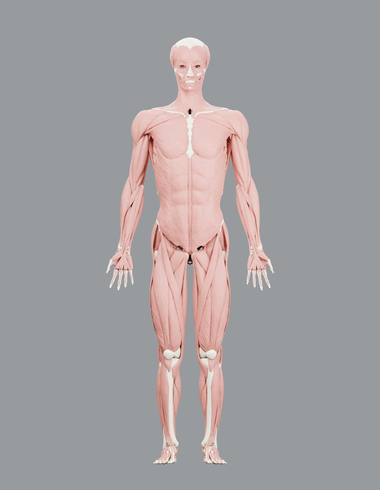
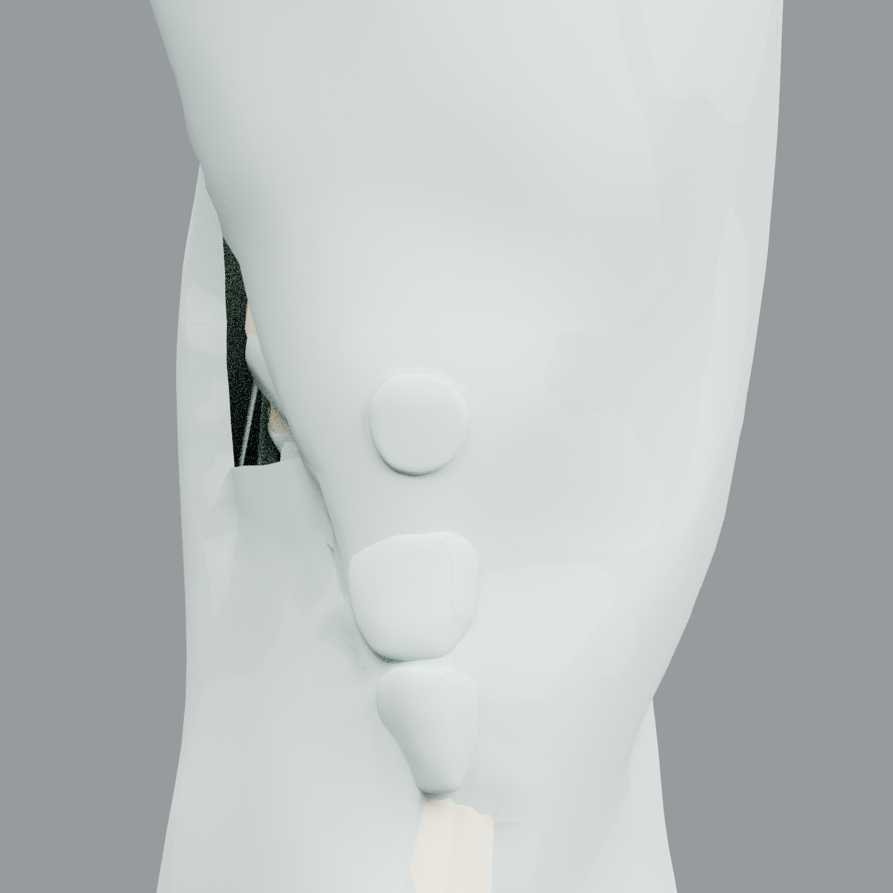
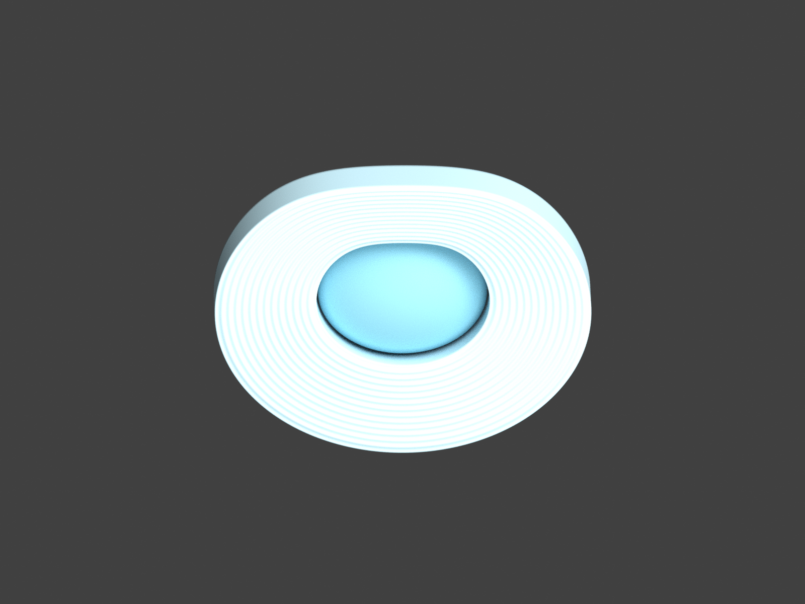

← Otwórz interaktywny atlas
Atlas w Blenderze
Rzeczywiste rendery edytowalnych modeli. Pełny katalog źródłowy zawiera 2913 siatek i 8,2 mln trójkątów; każdy model można obejrzeć osobno w atlasie. Szczegółowość danych różni się między strukturami.

Pełna geometria źródłowaMięśnie i szkielet z Z-Anatomy. Model został odtworzony z oryginalnej geometrii bez dodatkowego uproszczenia.

Kolano: struktury źródłoweKości, torebka i tkanki łączne. W aplikacji możesz izolować poszczególne struktury i wygaszać otoczenie.

Autorski model edukacyjny krążkaWarstwowa budowa pierścienia i centralne jądro. Rowki są poglądowe; liczba i głębokość nie pochodzą z pomiarów anatomicznych.